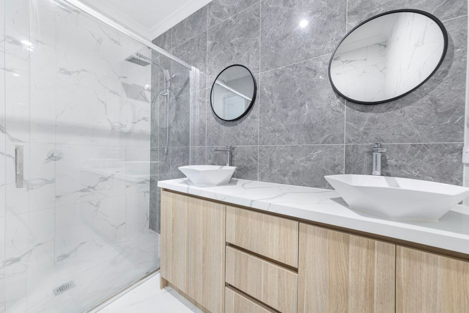
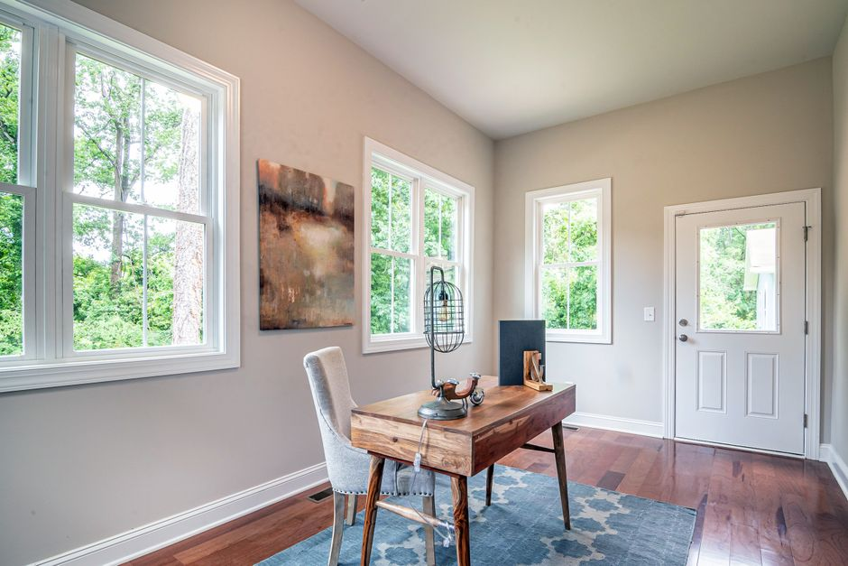
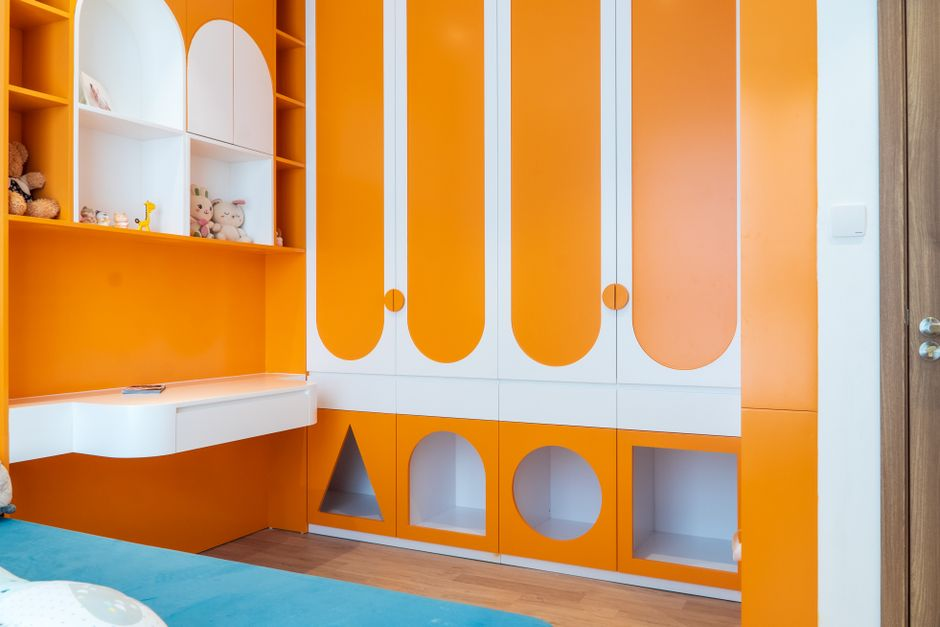
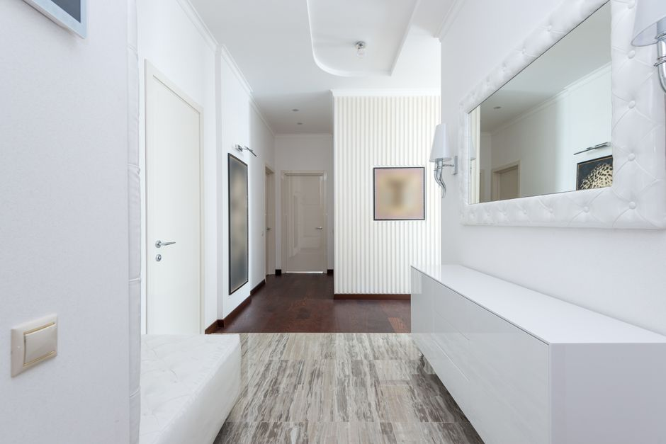

First coat
Bond and coverage
The first coat is doing a different job from the second. It bonds to what is underneath and it tells us where the substrate is still drinking, which is information you only get once paint is actually on the wall.
What this covers
Interior painting gives a room back its light. We cut in by hand, cover everything that stays, and leave the space cleaner than we found it.

What we paint
One room or the whole house. What changes between them is the traffic, the moisture and how close anyone stands to the finish.
The room the house is judged on, and usually the one with the most wall and the most light to work with.

Low traffic, so the finish can be softer. This is where a matte holds up perfectly well.

Grease, steam and wiping down, so the finish has to be washable, not just flat.

Moisture is constant here. The coating has to shed it, and the ventilation matters as much as the paint.

A room people sit in all day under artificial light, which changes how a colour reads from morning to evening.

Marks, hands and repainting sooner than anywhere else, so durability beats delicacy.

The highest traffic in the house and the narrowest walls. Scuffs land here first.

Why the quote says two
Painting a house here is a different job from painting one in a dry climate. Humidity changes how long a coat stays open, and it decides how much film you need on a wall before the weather starts taking it back.
First coat
The first coat is doing a different job from the second. It bonds to what is underneath and it tells us where the substrate is still drinking, which is information you only get once paint is actually on the wall.

Second coat
The second coat is where the color goes true and the film reaches the thickness printed on the tin. One coat over a sound wall looks fine from the driveway and looks thin on the north side by spring.
Kinds of paint
The difference between them is how much light they throw back. Same colour on all four below, so the sheen is the only thing changing.
Left wall
Right wall
One wall, one light, two finishes at a time. Drag the divider, or swap either side. This is a sheen demonstration and not a colour sample; we bring real samples to the estimate.
Non reflective, and the most forgiving over a wall that is not perfectly flat. Best on ceilings and low traffic rooms.
A slight sheen, between matte and gloss. Wipes clean, which makes it the usual choice for living rooms and bedrooms.
A subtle gloss that is durable and washable. Kitchens, bathrooms and children's rooms.
A real shine, and hard wearing. Trim, doors and anything meant to stand out from the wall behind it.
How a job runs
The same three whether the job is one room or a whole elevation.
Book your free consultation by phone or through the form. Ask for references at any time.
You get a project schedule and an accurate quote, whatever the size of the job.
Your painter starts, keeps you updated, and tidies up when the job is done.
2,500
Jobs finished
10
Cities covered
2
Coats quoted as standard
$0
Cost of an estimate


Questions we get asked
These are the ones asked about interior painting specifically. If yours is not here, ask it on the call.
Not answered here?
Ask it on the estimate call. No charge, no obligation.
Mon to Fri, 8:00 AM to 6:00 PM. Sat and Sun closed.
No. Our team covers and protects furniture and floors. If a piece is delicate or awkward to move, it is worth taking it out of the room beforehand.
Yes. For most projects our paint specialists can match almost any color on your home from a chip or a wet sample. If an exact match is not possible we will talk you through the next best option.
White, gray and the tan range keep coming up. We will bring samples either way, because what a color does in your room under your light is the only test that counts.
Yes. Every estimate is written for two coats over prepared surface, and the number you get is the number for the finished job. If a surface genuinely only needs one, we say so and the quote comes down instead of staying where it was.
Where we do it
The New Orleans metro, across the lake on the north shore, and up the river as far as Baton Rouge. Which ground you are on changes the schedule more than the size of the job.
Shade keeps moisture on a wall long after the sun has moved off it. Under a heavy oak canopy the recoat window stretches out, and the shaded elevation is the one that sets the schedule for the whole house.
A canal, a levee or a lakefront behind the house holds humidity at ground level. Two ends of one street can be ready to coat at different hours, so the order of the day matters more than the size of the crew.
Old siding, old millwork and old paint mean most of the day goes into preparation. On an older frontage the finish is only ever as good as what was scraped, filled and primed underneath it.
Either way
Whether you have a small interior project or a large-scale exterior makeover in mind, Big Easy Paintings is your partner for the work. Talk to us about the project, get a quote, and we will tell you plainly what it takes.
Free estimate
On site or remote, in all ten towns. No charge and no obligation. If it is quicker to talk, call 504-226-6252 and we will pick up.
Free estimates across all ten towns, on site or remote. No charge and no obligation.